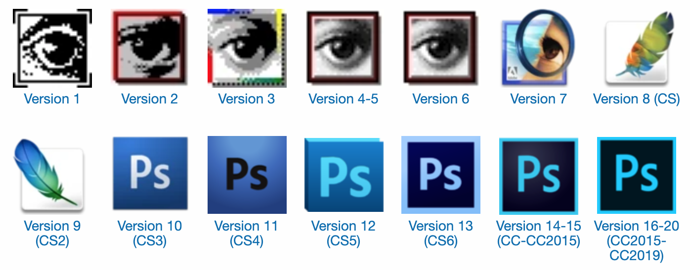

photoshop
Photoshop est un logiciel de retouche, de traitement et de dessin assisté par ordinateur, lancé en 1990 puis en 1992 pour les systèmes d'exploitations MacOS et Windows. Édité par la société Adobe, il est principalement utilisé pour le traitement des photographies numériques et sert également à la création ex nihilo d’images. Il travaille essentiellement sur images matricielles car les images sont constituées d’une grille de points appelés pixels. L’intérêt de ces images est de reproduire des gradations subtiles de couleurs.

Identité visuelle
